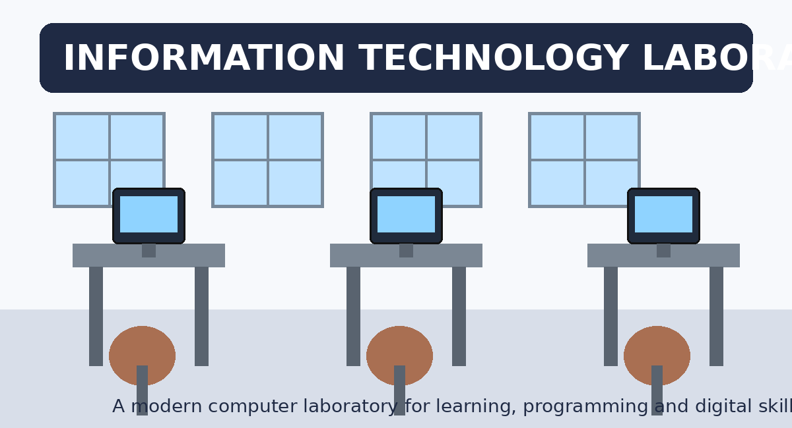

Welcome to the Department of Information Technology
The Department of Information Technology prepares students with practical and theoretical skills in computing, programming, information systems, networking and digital technologies. The department encourages creativity, problem-solving and the responsible use of technology in education, business and society.
Explore Our CoursesOur IT Laboratory

Our laboratory provides a learning environment where students can practise programming, networking and other digital skills.
What We Offer
Programming
Develop problem-solving and software development skills.
Develop problem-solving and software development skills.
Information Systems
Learn how technology supports organisations and decision-making.
Learn how technology supports organisations and decision-making.
Networking
Understand computer networks and communication technologies.
Understand computer networks and communication technologies.
Digital Skills
Build practical skills for the modern digital environment.
Build practical skills for the modern digital environment.